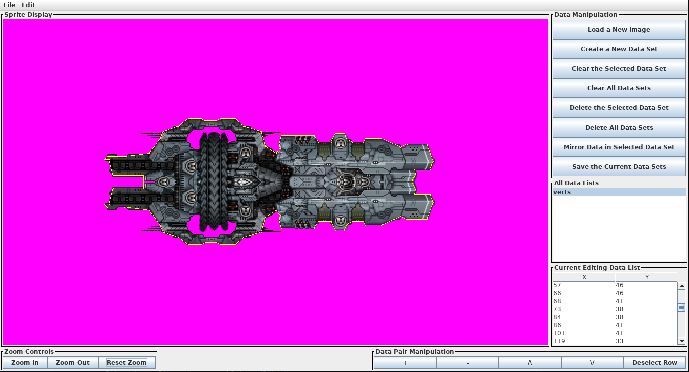
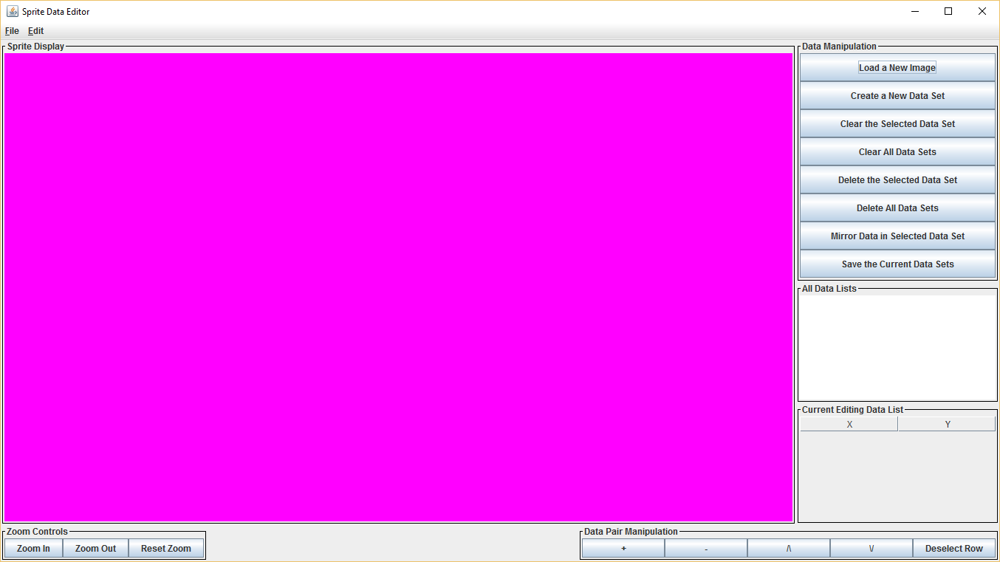
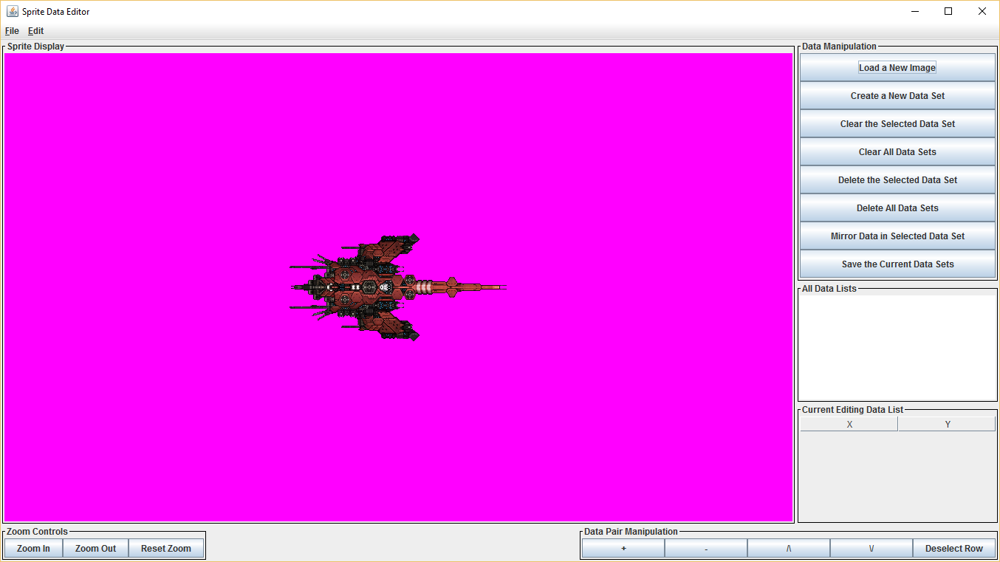
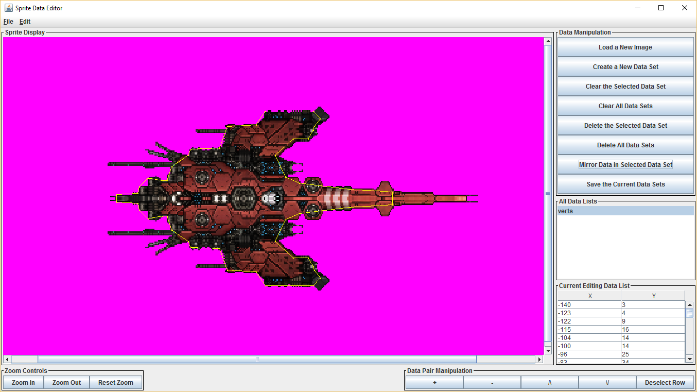

AeroHelper (originally Sprite Data Editor) is a program that I created to assist my development of Orionis. I made AeroHelper as each ship in Orionis has a polygonal shape that represents their collision bounds, so that projectiles are able to hit their targets. To create these bounds I had to manually calculate each individual point, which proved tedious even for the smallest of ships. And so, AeroHelper exists so that I can simply click where I want the point to be and the program calculates the actual coordinates of it (which are relative to the origin of the ship, or its center).

AeroHelper handles its data by creating a list of ordered pairs. Each ordered pair represents a point. What this point means is up to the user. The user can name each list so that they can differentiate between them. The program also draws a line between each point (in order of creation) to illustrate the polygonal bounds that the user is creating.
Once the user has created their data lists, they can export them to a text file that is formatted in such a way that the data can be copied and pasted into a JSON file. Eventually I will add the functionality to actually export the data in a number of different file formats so that the user does not have to do any more manual work.
AeroHelper is available for download here. AeroHelper is coded in Java using the Swing GUI library, and is estimated to be roughly 90% complete. I plan to develop AeroHelper to be a general helper program for all of my games. I will most likely port AeroHelper to another language, though I will definitely at least switch GUI libraries given some of the limitations of Swing.
The sprites seen on this page are placeholders and are taken from here. They will eventually be replaced with my own sprites.
Visit the GitHub page!

AeroHelper as it appears when first opened.

AeroHelper as it appears when a sprite is opened.

An example of what AeroHelper looks like when it is used to create a polygonal collision bounds. Notice that the viewer is zoomed in.